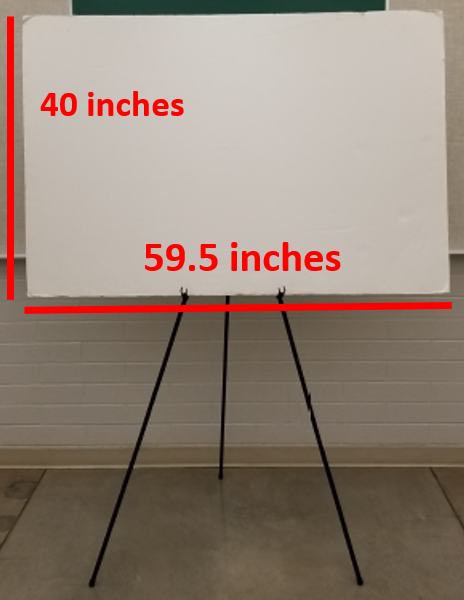

The conference will be LIVE at BYU this year (a Zoom option will be available).
6th Annual conference: Thursday,
April 7, 2022
Registration deadline: March 27, 2022.
Abstract
Post-deadline abstracts are no longer being accepted for 2022.
Conference Schedule
You can download the 2022 Conference Flyer.
Abstracts should be limited to approximately 350 words. (Honestly, shorter abstracts are more likely to be read by everyone anyway.) Please submit your abstract as a pdf. If your abstract is accepted, the pdf you submit will be exactly what is posted on the conference website and agenda.
Talks will be 12 minutes maximum with 3 minutes for Q&A and the transition to the next speaker for a total of 15 minutes. The session moderator will step in to keep things on track if we must. All talks need to be preloaded onto the conference computer prior to the meeting starting. Detailed instructions will come with your acceptance email.
Thank you for preparing a poster for the Science for Solutions conference. We look forward to viewing it and learning about your work. We want to archive your poster on the conference website and make it available to a wider audience. So please send a pdf of your poster as described below in addition to having a hardcopy of your poster for the actual conference.

Posters will be displayed on an easel as shown in the photo. Easel will accommodate the poster board with either the 59.5 inch or 40 inch side horizontal. We have found that horizontal posters are generally easier to read, especially for people in wheelchairs or who are shorter of stature.
1. Because it will take a few days for us to get all the posters uploaded to their respective web pages, please send John Sohl your poster file no later than April 5th. Earlier would be better. Don't worry if you need to make last minute corrections, just send the corrected poster as soon as you can and we'll update the website with the newest version.
2. Please email the poster file to jsohl@weber.edu this email will handle files as large as 30 mb. We discourage files larger than this, since conference attendees will need to download your file to view it.
3. The conference website schedule lists each poster with links to both the abstract and the poster itself.
To accommodate this format, we ask that you submit a poster with these characteristics:
· The poster file must be in PDF format.
· The poster file must consist of a single page (don’t send us a presentation with multiple slides).
· The poster should be in a landscape layout (wider than it is tall). We prefer an aspect ratio of 16:9 or 16:10, since that is what is used for most computer screens.
· We prefer posters that are readable as a single page on a medium-sized desktop computer screen (maybe a 17” screen). Please make your font and images large enough so readers don’t have to view your poster while drastically zoomed in.
· We encourage you to embed links to videos, additional tables and figures, or other supplementary material into your poster.
-Conference organizing committee